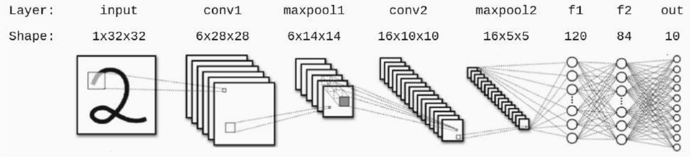

Jak funguje počítačové vidění a jak počítač rozpozná, co
je na obrázku? Jeden z velkých průlomů v oblasti
počítačového vidění nastal v roce 1989, kdy Yann LeCun
a jeho kolegové vyvinuli LeNet, jednu z prvních
praktických konvolučních neuronových sítí, která byla úspěšná
při rozpoznávání číslic psaných rukou. Konvoluční neuronové
sítě svou pravou renesanci zažily poté v roce 2012, kdy
Alex Krizhevsky a jeho kolegové dokázali přesnost
počítačového vidění na známém datasetu ImageNet přibližně
zdvojnásobit díky konvoluční neuronové síti AlexNet
s přibližně 60 miliony trénovatelnými parametry. Jen pro
srovnání, AlexNet má asi 1000krát více parametrů, než měl
původní LeNet.
Jak konvoluční neuronové sítě fungují? Základem je tzv.
konvoluce. Konvoluce je matematická operace, která se
v CNN používá k filtrování vstupního obrazu nebo
signálu pomocí malých matic (kernelů). Tento proces zahrnuje
posouvání kernelu přes vstupní data a počítání součtu
součinu hodnot vstupu a hodnoty kernelu. Kernel se
používá k extrakci specifických rysů nebo vzorců, jako
jsou hrany, textury, tvary nebo jiné charakteristiky obrazu.
Někdy se při konvoluci použije padding, který přidává extra
hodnoty (typicky nuly) kolem hran vstupního obrazu nebo
matice. To umožňuje kontrolovat výstupní rozměry
a zajistit, že okrajové pixely dostanou stejnou pozornost
jako pixely uvnitř obrazu. Dalším důležitým termínem je stride
neboli krok. Stride určuje, jak daleko se má kernel posouvat
po aplikaci na vstupní obraz nebo signál. Pokud je stride
nastaven na 1, kernel se posune o jeden pixel při každé
operaci. Pokud je stride větší, kernel se posouvá o více
než jeden prvek, což zmenšuje velikost výstupu. Pro lepší
pochopení konvoluce doporučujeme
tuto animaci. Na vstupní obrázek 6 × 6 pixelů zde aplikujeme konvoluci
s kernel size 3 × 3, padding = 1 (v tomto případě
nepřidáváme nuly, ale duplikujeme okrajové hodnoty)
a stride = 1. Pooling je operace, která slouží
k redukci rozměrů vstupního obrázku. Mezi nejčastější typ
poolingových operací patří max pooling. Pooling pomáhá snížit
výpočetní náročnost a zajišťuje, že síť bude invariantní
vůči malým posunům a deformacím. Animaci max poolingu
s kernel size 2 × 2, padding = 0 a stride = 1 můžete
vidět
zde.
Na obrázku níže vidíte architekturu konvoluční neuronové sítě.
Na vstupu je obrázek ručně psané číslice o velikosti 1 ×
32 × 32, na výstupu pak pravděpodobnosti, že daná číslice je
jedním z čísel 0–9. Dáváme vám tuto neuronovou síť
k dispozici i ve
3D
a 2D
vizualizaci. Která z následujících tvrzení o této
konvoluční neuronové síti jsou pravdivá? (Pro správné
zodpovězení otázky musíte brát v potaz
i vizualizaci, abyste měli úplnou informaci
o neuronové síti.)
